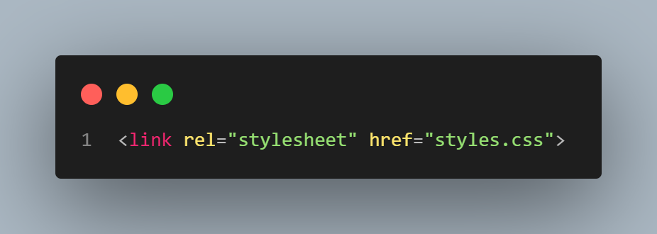

There are two forms to use the concept of Responsive Desing when do you code. The first form is using the internal style sheet. In this page, i use the concept of internal style sheet for configure the color and background of all <h1> tag and other sentences. Also, in this page i use this concept for configurate the body of this page.
The second form is using external style sheet. In this page, i use an external CSS file for configure the color and background of all <h2> tag and other sentence. The way it works with an external style sheets is that you put your rules in a different file. So you open up a file, you're going to save it something such as like "myStyle" with a .CSS file extension.
This is an example of how to use an external style sheet in HTML. To use an external style sheet in your HTML file, you need to link it in your HTML file. You do this by using the <link> tag. In this case, I use the <link> tag to link to an external CSS file named "styles.css". Then once you've put your rules in a separate file, all we need to do is add a link into the head section, like appearce in the head section of this code.
There are multiple ways to code color for your web page. If you want to see that in a level of code, you must go to "inspect".
The @font-face rule allows you to define your own fonts. You can use this rule to include local fonts in your web pages. The @font-face rule has the following syntax:
@font-face {
font-family: 'MyFont';
src: url('myfont.ttf');
font-weight: normal;
font-style: normal;
}